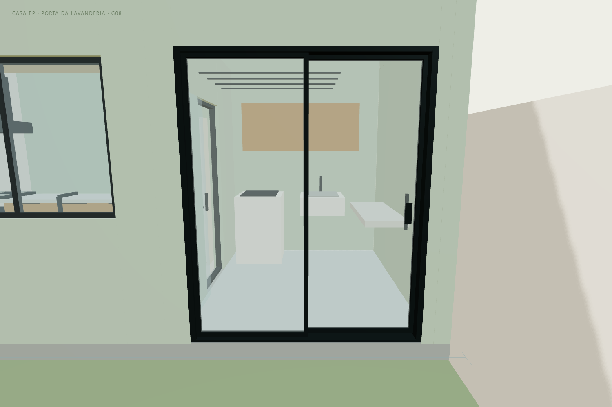
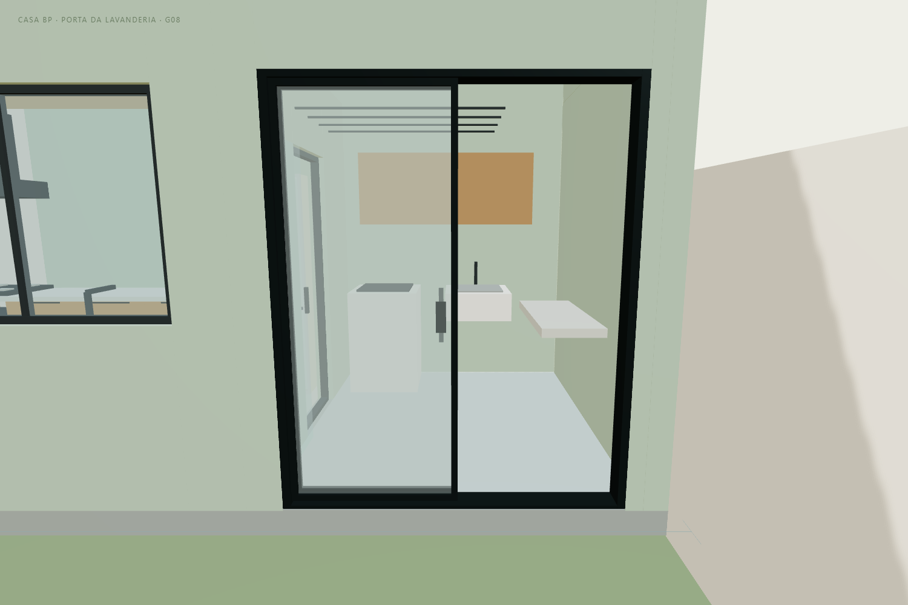
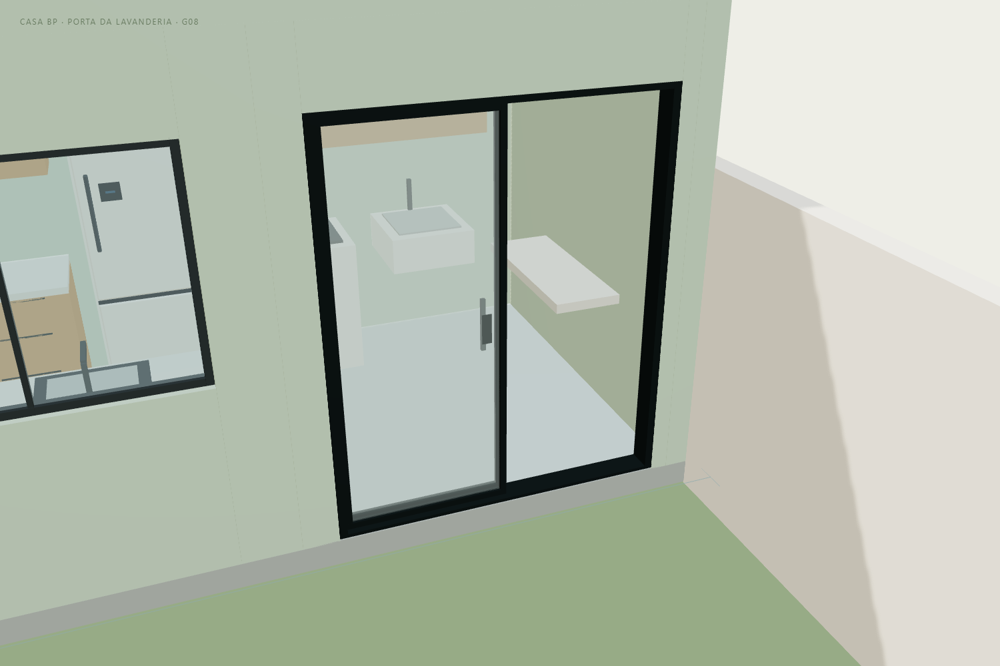

CASA BP · G08 · 11/11/2026
A janela pequena e a porta lateral da lavanderia foram substituídas por um único conjunto de vidro de correr, com caixilho grafite. A passagem continua no lado da antiga porta. A folha móvel desliza para o lado da antiga janela, sobrepondo-se à folha fixa, sem abrir para dentro da lavanderia ou avançar no quintal.
Abrir proposta 3D · Tour · Modelo GLB G08

| Elemento | Medida do estudo |
|---|---|
| Conjunto externo do caixilho | 1,90 m de largura × 2,30 m de altura |
| Folhas | Duas: uma fixa e uma móvel, em trilhos paralelos |
| Curso da folha móvel | 0,885 m, para o lado da antiga janela |
| Passagem geométrica com abertura completa | Aproximadamente 0,89 m; descontados os perfis e a sobreposição desenhados |
| Retornos da parede | 0,20 m no encontro com a cozinha e 0,24 m no lado dos fundos |
| Fechamento acima do vão | Faixa ilustrativa até o teto; verga e apoios não dimensionados |
A largura nominal de 1,90 m representa o conjunto completo, não a abertura útil para passagem. As folhas desenhadas têm aproximadamente 0,925 m cada, com sobreposição. O vidro é ilustrativo: tipo, espessura, dimensionamento e fixação dependem da especificação final.

A lavadora, tanque, armários, varal e bancada da lavanderia foram mantidos. O tour abre a porta antes de percorrer a casa e restaura a posição escolhida ao sair. Os botões Abrir porta de vidro e Fechar porta de vidro permitem comparar o conjunto. Use Porta · vista externa ou Porta · de frente.
Os níveis de piso foram preservados, incluindo a diferença existente no modelo entre a lavanderia e o quintal. Esta revisão não elimina esse desnível nem comprova acessibilidade. Soleira, trilhos e drenagem devem ser detalhados para o acesso externo.
Para executar, é necessário conferir a parede, o alargamento do vão, a verga e seus apoios, as instalações, o vidro de segurança, o caixilho, ferragens, travamento e drenagem. Os retornos e a faixa acima do vão são apenas uma representação arquitetônica, sem dimensionamento estrutural. O render não autoriza retirar alvenaria ou elementos estruturais.
A janela panorâmica da cozinha permanece como estava. O forro contínuo G07, o banheiro corrigido, o escritório, a copa para seis, a suíte, o closet e a frente também foram preservados. A geometria original e as revisões anteriores continuam guardadas separadamente.

Teto contínuo G07 · Banheiro G06 · Escritório e café G05 · Carro “2024 BYD Seal”, Ddiaz Design, adaptado sob CC BY-NC-SA 4.0.